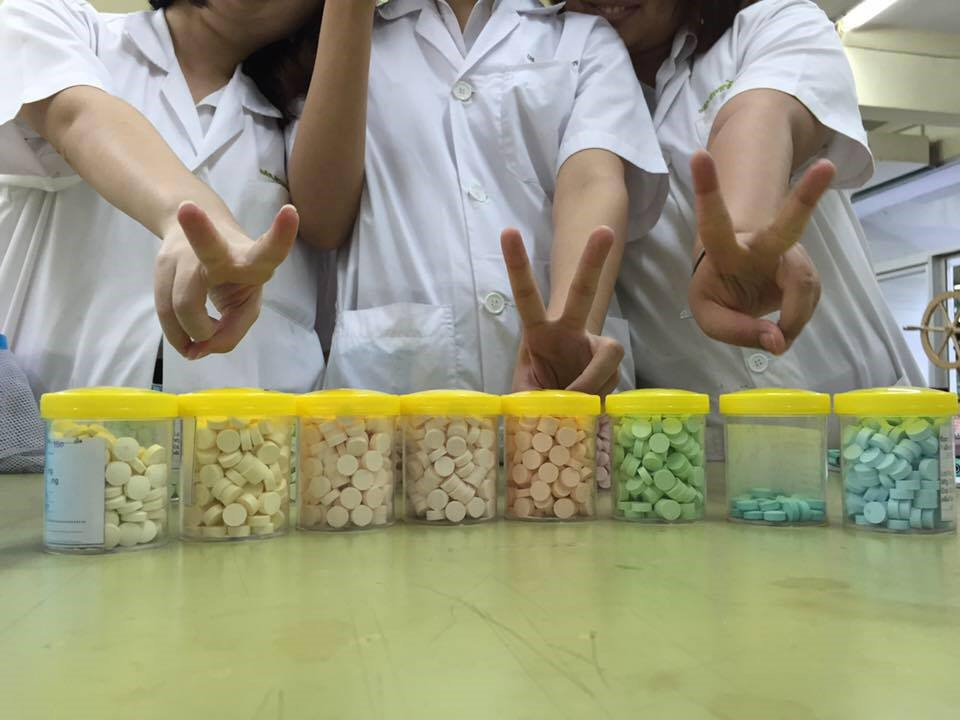
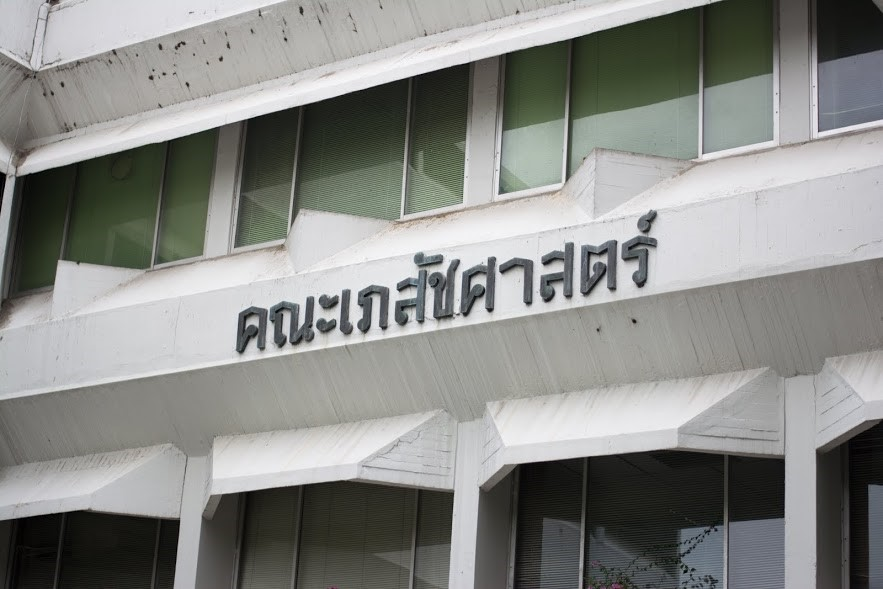
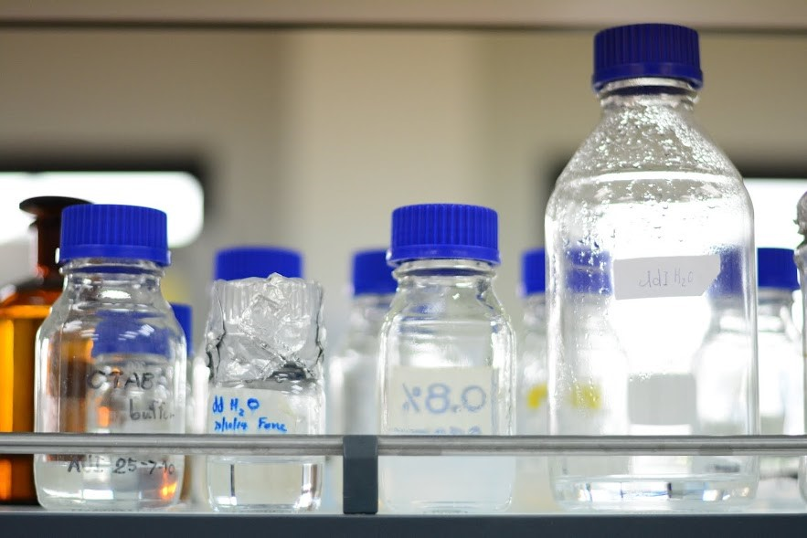
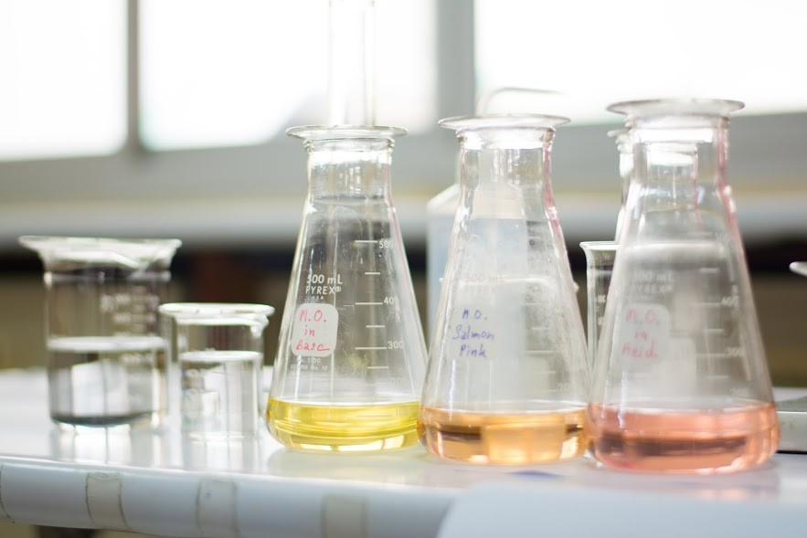
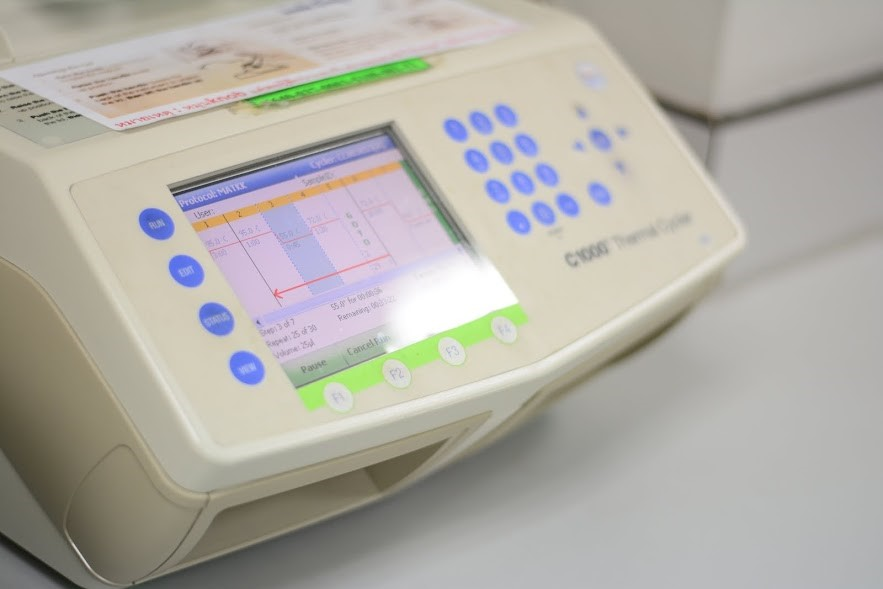

การสอบเข้า
มีการคัดเลือก Admission และระบบรับตรงร่วมกัน
สัดส่วนคะแนน
การคัดเลือก Admission ยังคงใช้คะแนนเฉลี่ยสะสมตลอดหลักสูตรมัธยมศึกษาตอนปลาย (GPAX) 20% O-net 30% ตามเดิม แต่ลดลงเหลือ 5 กลุ่มสาระการเรียนรู้วิชาที่จัดสอบคือ คณิตศาสตร์ วิทยาศาสตร์ ภาษาไทย สังคมศึกษา ศาสนาและวัฒนธรรม และภาษาอังกฤษ ในสัดส่วนวิชาละ 6% ส่วน 3 กลุ่มสาระฯ ที่เหลือ คือ สุขศึกษาและพลศึกษา ศิลปะ และการงานอาชีพและเทคโนโลยี จะรวมอยู่ในคะแนน GPAX ซึ่งจัดสอบโดยโรงเรียนอยู่แล้วสัดส่วนคะแนนที่ใช้ในการ Admission ของคณะเภสัชศาสตร์ คือ
- GPAX 20%
- O-net 30%
- GAT 10%
- PAT 2 40%
เปิดสอน 2 หลักสูตร คือหลักสูตรเภสัชศาสตรบัณฑิต สาขาวิชาการบริบาลทางเภสัชกรรม (Pharmaceutical Care) ซึ่งเน้นการเรียนในด้านโรงพยาบาลและผู้ป่วยเป็นหลัก และหลักสูตรเภสัชศาสตรบัณฑิต สาขาวิชาเภสัชกรรมอุตสาหการ (Industrial Pharmacy) ซึ่งเน้นการเรียนในด้านอุตสาหกรรมการผลิตยา, การค้นคว้าวิจัยด้านยา, และผลิตภัณฑ์ยาเป็นหลัก
คณะเภสัชศาสตร์มีทั้งหมด 7 ภาควิชาได้แก่ ภาควิชาชีวเคมีและจุลชีววิทยา, ภาควิชาเภสัชกรรมปฏิบัติ, ภาควิชาเภสัชวิทยาและสรีรวิทยา, ภาควิชาเภสัชเวทและเภสัชพฤกษศาสตร์, ภาควิชาเภสัชศาสตร์สังคมและบริหาร, ภาควิชาวิทยาการเภสัชกรรมและเภสัชอุตสาหกรรม และ ภาควิชาเภสัชเคมีและอาหารเคมี
เมื่อสำเร็จการศึกษาจากคณะเภสัชศาสตร์และสอบใบประกอบวิชาชีพเภสัชกรรมแล้ว ก็จะสามารถประกอบอาชีพเภสัชกรในสาขาต่างๆ ตามแต่ความถนัดได้
- เภสัชกรโรงพยาบาล มีหน้าที่จัดการคลังยาของโรงพยาบาล ตรวจสอบการสั่งยาของแพทย์ แนะนำการใช้ยาให้แก่ผู้ป่วยนอกและผู้ป่วยใน
- เภสัชกรชุมชน ซึ่งเป็นเภสัชกรประจำในร้านยา มีหน้าที่จ่ายยา ให้คำแนะนำการใช้ยาและการดูแลรักษาสุขภาพเบื้องต้นให้แก่คนในชุมชน
- เภสัชกรด้านการคุ้มครองผู้บริโภค โดยเภสัชกรในด้านนี้จะมีหน้าที่ควบคุมให้เกิดความปลอดภัย ในการผลิตและการใช้ยา ผลิตภัณฑ์เสริมอาหาร เครื่องสำอาง แก่ประชาขนทั่วไป ควบคุมการปฏิบัติหน้าที่ของเภสัชกรให้เป็นไปตามกฎหมายรวมถึงจรรยาบรรณแห่งวิชาชีพ
- เภสัชกรการตลาด มีหน้าที่นำเสนอข้อมูลเกี่ยวกับยาให้แก่บุคลากรทางการแพทย์
- เภสัชกรขึ้นทะเบียนยา เป็นผู้ทำหน้าที่ทบทวนข้อมูลด้านประสิทธิภาพและความปลอดภัยของยาใหม่เพื่อนำไปยื่นแก่ยาสำนักงานคณะกรรมการอาหารและยา เพื่อขึ้นทะเบียนยา
- เภสัชกรด้านการประกันคุณภาพยา มีหน้าที่ควบคุมกระบวนการผลิตยาในโรงงานให้เป็นไปตามมาตรฐานที่กำหนดไว้ ควบคุมคุณภาพวัตถุดิบ คุณภาพยาระหว่างการผลิต คุณภาพยาก่อนการจัดจำหน่าย คุณภาพยาหลังการจัดจำหน่าย เพื่อให้เกิดความปลอดภัยต่อผู้บริโภคอย่างสูงสุด
- เภสัชกรวิจัยและพัฒนา โดยสามารถแบ่งออกมาเป็นการวิจัยและพัฒนายาใหม่ ซึ่งมีหน้าที่ค้นหายาใหม่ รวมไปถึงการศึกษากลไกการออกฤทธิ์ พิษของยาเหล่านั้น และการวิจัยและพัฒนาสูตร ตำรับ เพื่อให้ได้สูตรตำรับยาที่ดี มีความคงตัวสูง สะดวกและเหมาะสมแก่ผู้บริโภค
- ยาแก้อักเสบ ไม่ใช่ยาปฏิชีวนะ หลายคนมีความสับสนในเรื่องนี้ การอักเสบคือกระบวนการ ปวด บวม แดง ร้อน ซึ่งยาแก้อักเสบก็จะช่วยบรรเทาและรักษาส่วนนี้ได้ ส่วนยาปฏิชีวนะ คือยาสำหรับฆ่าเชื้อแบคทีเรีย
- ยา 1 เม็ดประกอบด้วยยา และสารประกอบอื่นๆที่ช่วยให้ยาสามารถตอกอัดเป็นเม็ดได้ซึ่งเภสัชกรจะเป็นคนปรับปรุงสูตรตำรับให้เหมาะสมในการตอกอัดยาเป็นเม็ด หรือทำในรูปแบบยาที่เหมาะสม
- ยาและผลิตภัณฑ์เสริมอาหารอาจเกิดอัตรกิริยาต่อกันหรืออาจจะเรียกว่าเกิด”ยาตีกัน”ได้ เพราะฉะนั้นแล้วเมื่อได้รับยาใหม่ ควรจจะแจ้งแพทย์และเภสัชกรด้วยทุกครั้งว่าผู้ป่วยรับประทานยาหรือผลิตภัณฑ์เสริมอาหารใดอยู่บ้าง เพื่อให้แพทย์และเภสัชกรแก้ปัญหาการเกิด “ยาตีกัน” นี้ได้
- ตำลึงสามารถรักษาอาการแพ้ อักเสบจากแมลงสัตว์กัดต่อยได้ โดยนำใบสดมา 1 กำมือ ล้างให้สะอาด ให้ละเอียด ผสมน้ำเล็กน้อย แล้วค้นน้ำจากใบเอามาทาบริเวณที่มีอาการ ทาซ้ำบ่อยๆจนกว่าจะหาย
- ใบขี้เหล็กนำมา 4-5 กำมือ ต้มน้ำดื่มก่อนอาหาร จะช่วยแก้อาการท้องผูกได้
- ใบกะเพราและยอด 1 กำมือ ต้มน้ำดื่มเป็นยาขับลม แก้ปวดท้องได้ ควรใช้กะเพราแดงในการปรุงยา
- กินกล้วยน้ำว้าดิบสดครั้งละครึ่งถึงหนึ่งผล อาจใช้ผลดิบหั่น ตากแห้งบดเป็นผงชงน้ำดื่มจะช่วยแก้อาการท้องเสียที่ไม่รุนแรงได้ แต่ให้ระวังท้องอืด แก้โดยดื่มน้ำต้มสมุนไพรขับลมอื่นๆ




